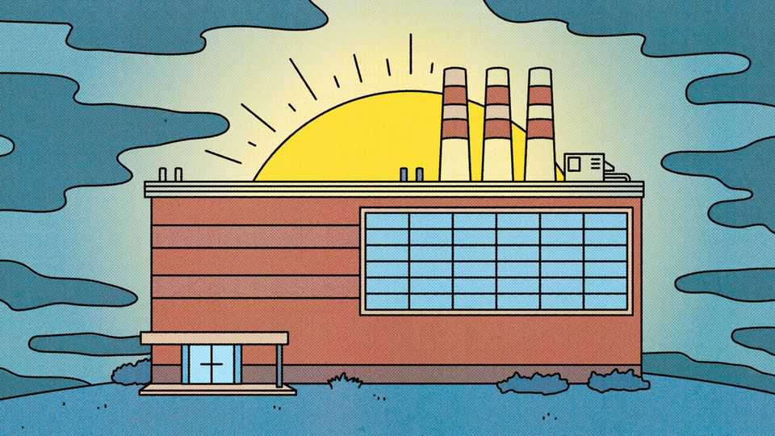
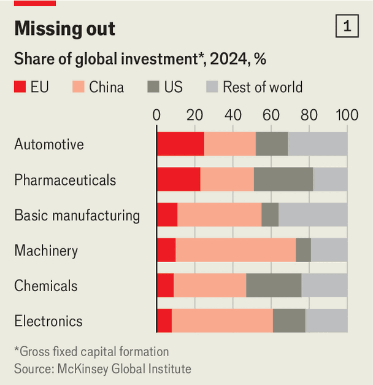
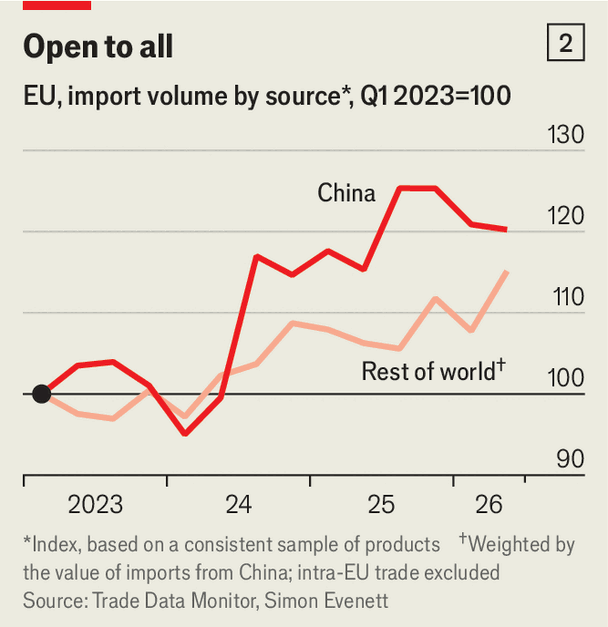

European industry is doing better than you may think
The firms most exposed to China are suffering. But many are adapting

Oct 1st 2026
“Do you want to see some hope?” Marco Mensink asks. Mr Mensink, who runs Cefic, a lobby group for Europe’s chemicals companies, first provides a grim diagnosis. High energy prices and Chinese competition are forcing plant closures and job losses. Further consolidation is “inevitable”. Hope takes the form of a cross-section of electric cable he keeps above his desk. It is made by Orient Cable, a Chinese giant. But the polymer insulating the wire is made by Borouge International, of Austria. Mr Mensink says that when he visits China, industry bigwigs ask incessantly about the European firm. It is the only part of the cable they cannot make—yet.
Much of the European Union’s industrial complex is under strain. On September 21st Volkswagen said it would step up its restructuring plan. It is one of five European carmakers to issue profit warnings this year, battered by Chinese rivals. The European Commission, the EU’s executive arm, is alarmed. Ursula von der Leyen, its president, warned recently that the trade deficit with China was at “a tipping point”.
But a closer look reveals more glimmers of hope besides a world-leading polymer. For all the hand-wringing about widespread deindustrialisation, the damage is for now confined to a handful of sectors. Parts of European industry are doing fine. And where firms are under threat, they are adapting to their new, harsher reality.
Two factors underlie the recent suffering of some European producers. One is energy, which has long been pricier than in America or China. Before subsidies, industrial electricity prices in France and Germany are roughly twice as high as in either of those countries. Wars in Ukraine and Iran have pushed costs higher still.
The other is China. Its industrial policy, innovation and advances in quality have fuelled its production of everything from steel rolls to electric vehicles (EVs). Its abundant supply coincides with faltering domestic demand, and some of its overcapacity is finding outlets abroad. Donald Trump’s trade restrictions have made Europe Chinese exporters’ main target.
Meanwhile European firms are finding it hard to sell in China, once a big, fast-growing, high-margin market. They often use local factories and supply chains, limiting exports from Europe. Thus China’s surplus in goods trade with the EU has more than doubled since 2019, to $420bn.
Carmakers have been particularly hard-hit. China used to be a profit engine for them, but now Chinese producers bring new (and good) cars to market far faster and more cheaply than they can. Production in the EU is down by 17% from its pre-covid level. When the automotive industry provides 6% of jobs in the EU, no wonder policymakers are fretting.

The squeeze in turn means less cash to invest, adding to the risk that EU firms fall further behind. According to a study of six industries by McKinsey, a consultancy, in 2024 Europe received less investment than both America and China in three (pharmaceuticals, electronics and chemicals). In none did it get the most (see chart 1).
All very gloomy. But it does not mean all European industry is doomed. Far from it: the pain is highly concentrated, by country and by sector. Eric Heymann of Deutsche Bank points out that, across the EU, manufacturing’s share of total gross value added has been a steady 16% or so in recent years. In some countries, notably Germany and Italy, it has declined slightly. Jobs data tell a similar tale. Since early 2023 EU manufacturing employment has fallen by about 2% to 28m. Germany alone accounts for four-fifths of the decline. And while the total jobs tally has fallen, that of high-skilled roles, such as engineers and technicians, has grown by 7%.
Some sectors are humming. Employment in pharmaceuticals, aerospace and electronics has risen since the start of 2023. The artificial-intelligence boom is benefiting France’s Schneider Electric, Germany’s Siemens and Italy’s Prysmian, all of which make gear that keep data centres whirring. Armsmakers such as Germany’s Rheinmetall and Italy’s Leonardo are boosting production as defence budgets grow.

The Chinese threat is also concentrated, as trade data show. Simon Evenett of IMD, a Swiss business school, argues that the standard story of a flood of cheap Chinese goods washing away European firms is overdone. Since 2023, he finds, the volume of EU imports from China has grown by only a bit more than those of the same goods from elsewhere (see chart 2). Europe is importing more from everywhere, not just China.
Of course, imports of some things from China have soared. Mr Evenett also looked at Germany’s top 100 or so imports from China. He identified those for which the volume had grown by more than 25% and prices had dropped by 10% since 2023. Eleven met these thresholds. In most of the 11, including EVs, furniture and some chemicals, Chinese and European wares compete head-on. But the idea that cheap Chinese products are undercutting a lot of Europe’s industry seems a stretch.
Moreover, some Chinese imports may help European firms. Among the 100 products contributing most to China’s global export growth since 2023, three-quarters of the growth came from components and intermediate goods, such as EV batteries and robotic arms. These are a threat to makers of similar kit. But for their European buyers, they lower production costs. A study by the European Central Bank has found that between 2000 and 2022, in sectors exposed to imports of Chinese intermediate goods, annual growth in industrial production rose by 0.6 percentage points. In those exposed to Chinese finished goods, it fell by about a percentage point.
In many respects, corporate Europe is adapting well to changed circumstances. In Spain, where plentiful solar power helps to keep energy prices low, European companies doubled their annual investment between 2021 and 2025, from the previous five years. A report by Morgan Stanley argues that European firms are “far more prepared” for this winter than in 2022, when the Ukraine war cut Russian gas supplies. Some have put energy-efficiency measures in place, or installed more local renewable power. Others are doing more financial hedging. Solvay, a Belgian-French chemicals firm, and K+S, a German salt company, have hedged most of their energy consumption for this year.
EU manufacturers are also selling more services, exporting $460bn-worth in 2024, a rise of 21% in two years. For some, such as Vestas, a Danish maker of wind turbines, and MTU Aero Engines, a German firm, that means maintenance contracts. Others are flogging more software, and infusing it in their hardware. Siemens, a German engineering giant, cottoned on early and has bought several software firms.
Indeed many business leaders and policymakers think Europe’s industrial future could rest on software, in particular AI. Mrs von der Leyen has asked Jim Hagemann Snabe, the chairman of Siemens, for a report on how AI might boost productivity. Germany already boasts the third-most industrial robots per employee in the world, after Singapore and South Korea. Sweden and Denmark are not far behind.
This means Europe has potential. But the continent should stop mourning old industries and ensure it can harness the power of AI and other new technologies. The gap with America and China on AI is wide, and not just in model-building; it may grow wider still. The threat to Europe’s industry from energy prices and China is overblown. The risk to it, if it falls further behind on AI, probably isn’t. ■